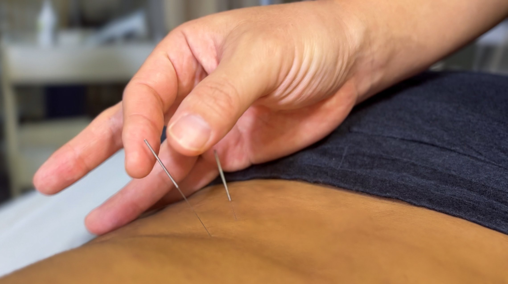

Acupuncture
Advanced acupuncture, modernized.
Dr. Kim is both a licensed acupuncturist and a doctor of physical therapy, which means your needle work and your physical therapy are guided by the same clinical mind. Evidence-based, non-drug care for pain, chronic tension, and conditions that haven't responded to conventional approaches. Eastern and Western frameworks, applied together by someone trained in both.
Book a session
The method
Classical acupuncture and Western needle work, applied together.
Dr. Kim is both a licensed acupuncturist and a doctor of physical therapy. That means he's not choosing between frameworks, he's working with both simultaneously. The needle placement draws on classical channel theory and Western trigger-point research, applied to what your body is actually doing that session.
Acupuncture at Cha PT is available as a standalone course of care, or integrated alongside physical therapy when indicated. It's particularly effective for chronic tension that hasn't resolved with hands-on work alone, nervous system dysregulation, and pain patterns that don't map cleanly onto a structural diagnosis.
Why it works here
Not a separate modality. Part of the same plan.
Acupuncture here is coordinated with physical therapy, not scheduled around it. The treatment draws on both Eastern channel theory and Western trigger-point research, applied to what the body is actually doing that session.
Sessions are sixty minutes in a private room. Nothing is rushed.

Questions
-
Is this dry needling?
No. Dry needling is a technique within physical therapy that uses needles to release trigger points. Acupuncture is a separate discipline with a distinct training pathway, theory base, and scope. Dr. Kim is a licensed acupuncturist, not a PT doing dry needling. The needle work here draws on classical acupuncture theory as well as Western research.
-
Do I need to be in PT to try acupuncture here?
No. Acupuncture is available as a standalone course of care. You don't need to be an existing PT patient. Some patients come specifically for acupuncture and never need hands-on PT.
-
What does it treat?
Chronic muscle tension, headaches, nervous system dysregulation, insomnia related to pain or stress, joint pain that hasn't resolved with other approaches, and post-surgical or post-injury patterns where the tissue has healed but the nervous system hasn't caught up. Dr. Kim also uses it alongside PT for patients whose progress has plateaued.
-
What does a session feel like?
Most patients describe it as relaxing, sometimes deeply so. You'll feel the needle insertion (brief, usually a dull pressure rather than pain) and then a settling as the needles work. The room is private and quiet. Sessions are sixty minutes.